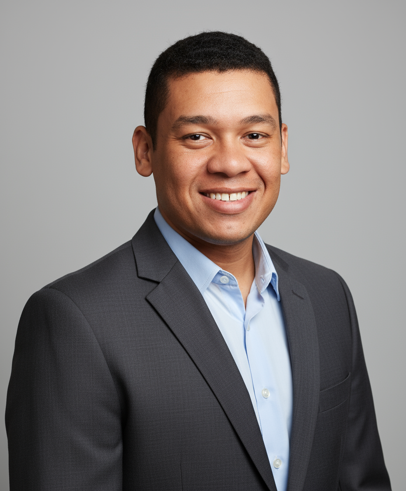
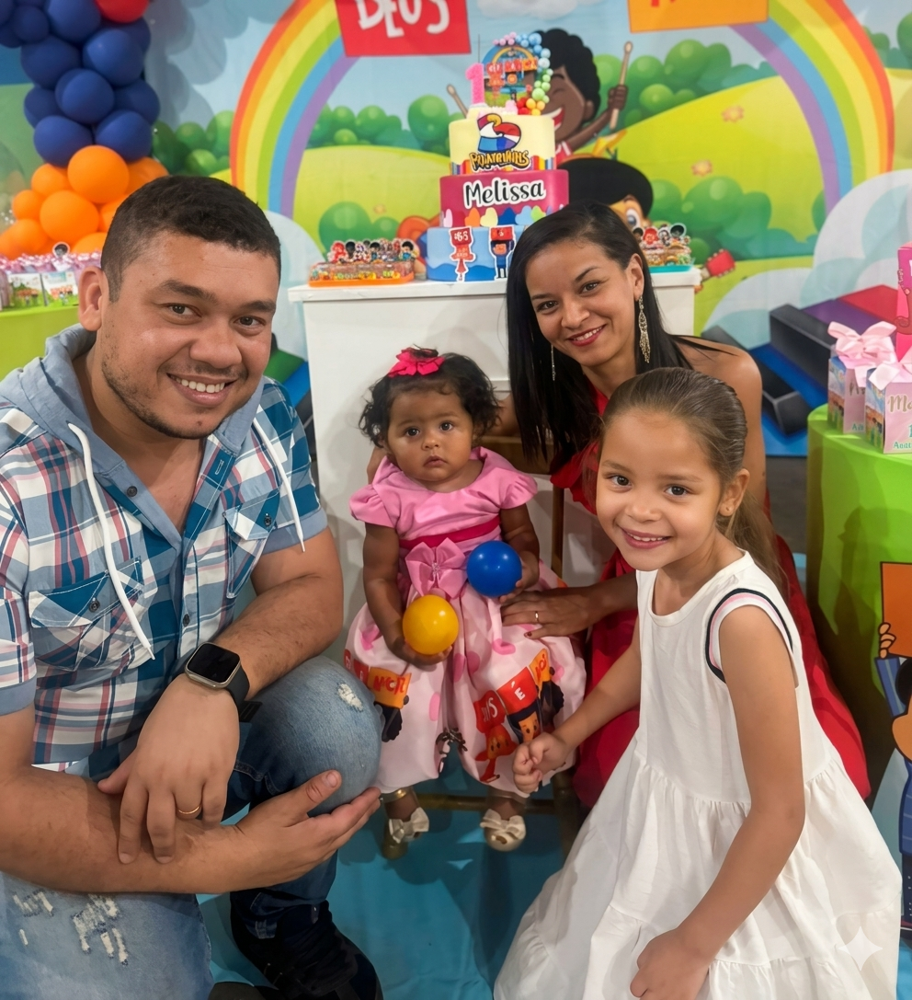

Tenho 36 anos, sou de Santa Fé do Sul - SP, e sou formado em Design Gráfico e Web Design. Ao longo da minha trajetória, desenvolvi um grande interesse em criar experiências visuais que sejam não apenas criativas, mas altamente funcionais.
Atualmente, meu foco está na criação de sites, landing pages e aplicativos para Android e iOS. Tenho me aprofundado no ecossistema JavaScript moderno, trabalhando com React, React Native e Expo, além de dominar integrações assíncronas e deploys ágeis. Acredito que a combinação entre design e tecnologia é essencial para criar produtos que unam estética, usabilidade e inovação.
Meu objetivo é continuar evoluindo na área de tecnologia, aplicando meus conhecimentos para desenvolver projetos que gerem impacto positivo e tragam resultados reais.
HTML, CSS, JavaScript, React
React Native, Expo, Java, Kotlin
Git, Vercel
CorelDRAW, Illustrator, Photoshop
Abril 2026 - Presente
"Conectando ideias. Construindo o futuro." Desenvolvimento de soluções digitais completas, incluindo a criação de landing pages (como o projeto Lagartixa Runner) e aplicativos de gestão com modelo de assinatura. Responsável por todo o ciclo: da interface gráfica ao deploy automatizado.
Janeiro 2022 - Presente
Desenvolvimento de aplicações web e mobile, utilizando tecnologias modernas. Responsável pela arquitetura de projetos e implementação de funcionalidades complexas e consumo de APIs.
2026
Participação ativa em formações de alto nível, incluindo o Santander Immersion 2026 e o Santander Bootcamp Creator, com foco em aprimoramento de lógica de programação e novas stacks do mercado.
Aplicativo desenvolvido do zero para gestão de um salão de beleza. Focado em uma experiência de usuário (UX) intuitiva e interface limpa. Um excelente case de estudo técnico e prático de desenvolvimento mobile que faz parte do meu portfólio principal.
Desenvolvimento e deploy de uma Landing Page focada em conversão e performance. O projeto envolveu desde os ajustes de styling da logo customizada até a estruturação do código para otimização e velocidade na web.
Aplicativo voltado para pilotos de avião, focado em otimizar e facilitar o briefing e o acesso a informações aeronáuticas. O projeto foi desenhado com foco absoluto em usabilidade, entregando dados críticos de forma clara e direta para garantir a melhor experiência e segurança na rotina da aviação.
A experiência de construir uma família ao lado da Aline e ser pai me ensinou a importância da responsabilidade, da paciência e da escuta ativa — habilidades que aplico diariamente na vida profissional, até mesmo na escolha do nome da minha marca, inspirada nas iniciais dos meus filhos. No meu tempo livre, busco o equilíbrio perfeito entre treinos de musculação e momentos de lazer com videogames. Valorizo relações humanas, trabalho em equipe e ambientes colaborativos, acreditando que o bem-estar pessoal é a base para alcançar resultados sustentáveis.

Entre em contato comigo através das minhas redes sociais: